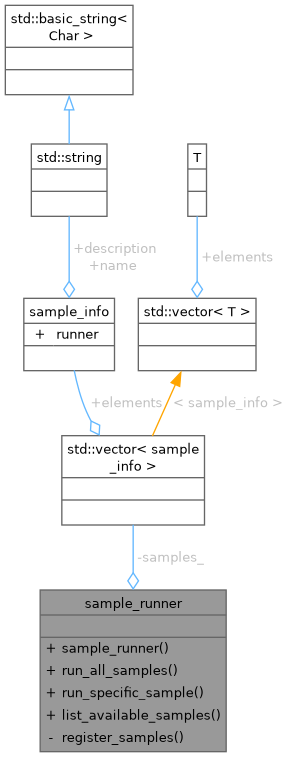
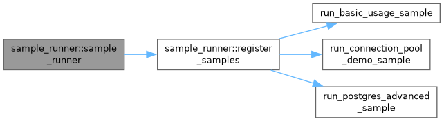
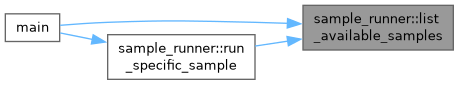
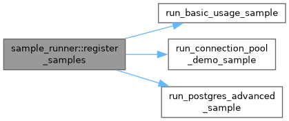
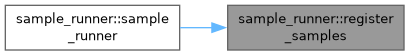
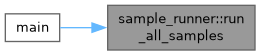
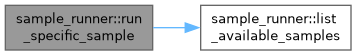
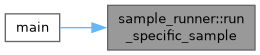

- Generated by
 1.12.0
1.12.0
|
Database System 1.0.0
Advanced C++20 Database System with Multi-Backend Support
|

Public Member Functions | |
| sample_runner () | |
| void | run_all_samples () |
| void | run_specific_sample (const std::string &sample_name) |
| void | list_available_samples () |
Private Member Functions | |
| void | register_samples () |
Private Attributes | |
| std::vector< sample_info > | samples_ |
Definition at line 43 of file run_all_samples.cpp.
|
inline |
Definition at line 45 of file run_all_samples.cpp.
References register_samples().

|
inline |
Definition at line 117 of file run_all_samples.cpp.
References samples_.
Referenced by main(), and run_specific_sample().

|
inlineprivate |
Definition at line 131 of file run_all_samples.cpp.
References run_basic_usage_sample(), run_connection_pool_demo_sample(), run_postgres_advanced_sample(), and samples_.
Referenced by sample_runner().


|
inline |
Definition at line 49 of file run_all_samples.cpp.
References samples_.
Referenced by main().

|
inline |
Definition at line 86 of file run_all_samples.cpp.
References list_available_samples(), and samples_.
Referenced by main().


|
private |
Definition at line 129 of file run_all_samples.cpp.
Referenced by list_available_samples(), register_samples(), run_all_samples(), and run_specific_sample().